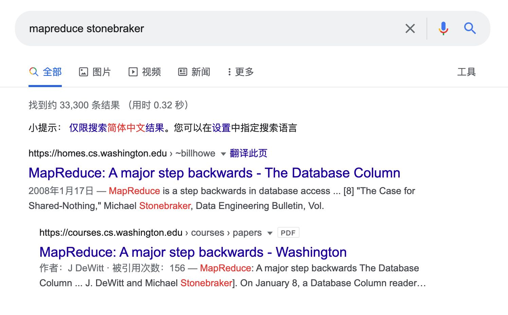
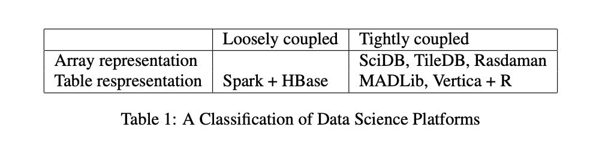

Readings in Database Systems, 5th Edition (2015)
Table of Contents
- Chapter 1: Background
- Chapter 2: Traditional RDBMS Systems
- Chapter 3: Techniques Everyone Should Know
- Chapter 4: New DBMS Architectures
- Chapter 5: Large-Scale Dataflow Engines
- Chapter 6: Weak Isolation and Distribution
- Chapter 7: Query Optimization
- Chapter 8: Interactive Analytics
- Chapter 9: Languages
- Chapter 10: Web Data
- Chapter 11: A Biased Take on a Moving Target: Complex Analytics
- Chapter 12: A Biased Take on a Moving Target: Data Integration
Chapter 1: Background
一个buzz是XML之后又是JSON，想基于JSON来构建底层数据表示。XML/JSON可以用来表现稀疏数据，但是用它来做底层数据表示是靠不住的。
In summary, JSON is a reasonable choice for sparse data. In this context, I expect it to have a fair amount of “legs”. On the other hand, it is a disaster in the mak- ing as a general hierarchical data format. I fully ex- pect RDBMSs to subsume JSON as merely a data type (among many) in their systems. In other words, it is a reasonable way to encode spare relational data.
No doubt the next version of the Red Book will trash some new hierarchical format invented by people who stand on the toes of their predecessors, not on their shoulders.
另外一个buzz则是MapReduce, 后来连google自己都不用了，但是整个业界都被带到坑里面去了。
The other data model generating a lot of buzz in the last decade is Map-Reduce, which was purpose-built by Google to support their web crawl data base. A few years later, Google stopped using Map-Reduce for that application, moving instead to Big Table. Now, the rest of the world is seeing what Google figured out earlier; Map-Reduce is not an architecture with any broad scale applicability. Instead the Map-Reduce market has mor-phed into an HDFS market, and seems poised to become a relational SQL market. For example, Cloudera has re- cently introduced Impala, which is a SQL engine, built on top of HDFS, not using Map-Reduce.
之后的十年肯定会有更多的轮子被造出来，然后又被丢弃。数据库技术更新换代还是很快的，但是hyper的东西也比较多。
In summary, in the last decade nobody seems to have heeded the lessons in “comes around”. New data models have been invented, only to morph into SQL on tables. Hierarchical structures have been reinvented with failure as the predicted result. I would not be surprised to see the next decade to be more of the same. People seemed doomed to reinvent the wheel!
虽然"one size fits all"很难做到，但是巨头们也要尽可能地创新并且和原来的产品结合起来，否则就会甚至失去原有客户。
It is hard to imagine that “one size fits all” will ever be the dominant architecture again. Hence, the “elephants” have a bad “innovators dilemma” problem. In the classic book by Clayton Christiansen, he argues that it is difficult for the vendors of legacy technology to morph to new constructs without losing their cus- tomer base. However, it is already obvious how the ele- phants are going to try. For example, SQLServer 14 is at least two engines (Hekaton a main memory OLTP system and conventional SQLServer — a legacy row store) united underneath a common parser. Hence, the Microsoft strategy is clearly to add new engines under their legacy parser, and then support moving data from a tired engine to more modern ones, without disturbing applications. It remains to be seen how successful this will be.
Chapter 2: Traditional RDBMS Systems
传统数据库有几个东西经受住时间考研继承下来了：
- txn manager
- query optimizer
The transaction manager is probably the biggest legacy of the project, and it is clearly the work of the late Jim Gray. Much of his design endures to this day in commercial systems. Second place goes to the Sys- tem R optimizer. The dynamic programming cost-based approach is still the gold standard for optimizer technol- ogy.
关于PostgresSQL有这么几个东西：
- ADT/UDT做的很好
- 开源模型产生许多高质量代码
- 这个项目上培养出许多数据库开发人员
However, in my opinion the important legacy of Postgres is its abstract data type (ADT) system. User-defined types and functions have been added to most mainstream relational DBMSs, using the Postgres model. Hence, that design feature endures to this day. The project also experimented with time-travel, but it did not work very well. I think no-overwrite storage will have its day in the sun as faster storage technology alters the economics of data management.
It should also be noted that much of the importance of Postgres should be accredited to the availability of a robust and performant open-source code line. This is an example of the open-source community model of devel- opment and maintenance at its best. A pickup team of volunteers took the Berkeley code line in the mid 1990’s and has been shepherding its development ever since. Both Postgres and 4BSD Unix [112] were instrumental in making open source code the preferred mechanism for code development.
Besides the ADT system and open source distribu- tion model, a key legacy of the Postgres project was a generation of highly trained DBMS implementers, who have gone on to be instrumental in building several other commercial systems
Chapter 3: Techniques Everyone Should Know
DBMS几个最重要的技术是
- query optimization
- concurrency control （事务隔离级别）
- database recovery （ARIES, 教科书上解读通常更好，论文里面会有比较多的讨论和对比以及扩展实现）
- distribution
In this chapter, we present primary and near-primary sources for several of the most important core concepts in database system design: query planning, concurrency control, database recovery, and distribution. The ideas in this chapter are so fundamental to modern database systems that nearly every mature database system im- plementation contains them. Three of the papers in this chapter are far and away the canonical references on their respective topics. Moreover, in contrast with the prior chapter, this chapter focuses on broadly applicable techniques and algorithms rather than whole systems.
concurrency control主要指事务隔离级别，但是这个东西非常乱：学术界对于隔离级别是有明确定义的，但是产品宣称的隔离级别则可能会重定义。
In the second half of this paper, Gray et al. provide a rudimentary formalization of the behavior of these lock- based policies. Today, they are prevalent; as we discuss in Chapter 6, non-serializable isolation is the default in a majority of commercial and open source RDBMSs, and some RDBMSs do not offer serializability at all. Degree 2 is now typically called Repeatable Read isolation and Degree 1 is now called Read Committed isolation, while Degree 0 is infrequently used [27]. The paper also dis- cusses the important notion of recoverability: policies under which a transaction can be aborted (or ”undone”) without affecting other transactions. All but Degree 0 transactions satisfy this property.
分布式事务处于数据库和分布式系统的边缘地带。
Unfortunately, the database and distributed comput- ing communities are somewhat separate. Despite shared interests in replicated data, transfer of ideas between the two were limited for many years. In the era of cloud and Internet-scale data management, this gap has shrunk. For example, Gray and Lamport collaborated in 2006 on Paxos Commit [71], an interesting algorithm com- bining AC and Lamport’s Paxos. There is still much to do in this intersection, and the number of “techniques everyone should know” in this space has grown.
Chapter 4: New DBMS Architectures
几个大的趋势：
- 用于OLAP的列式存储系统
- main memory database
- MVCC as concurrency control
- NoSQL(拆箱即用不需要预先定义schema, 以及支持半结构化数据)
- 与 Hadoop/HDFS/Spark 大数据生态结合
Cristian Diaconu, Craig Freedman, Erik Ismert, Per-Ake Larson, Pravin Mittal, Ryan Stonecipher, Nitin Verma, Mike Zwilling. Hekaton: SQL Server’s Memory-optimized OLTP Engine. SIGMOD, 2013.
Stavros Harizopoulos, Daniel J. Abadi, Samuel Madden, Michael Stonebraker. OLTP Through the Looking Glass, and What We Found There. SIGMOD, 2008.
Chapter 5: Large-Scale Dataflow Engines
Google发布了一系列大规模系统性相关的论文，但是每个系统都只是实现了DBMS其中很小的一部分。这个很难说Google这些系统是否是某种意义上的退步，因为有时候为了超前必须后退完成一些基本工作（后面提到的几个工作），只是这个后退把整个业界也带着跑偏了。
Google’s string of publications on their large-scale systems, including Google File System [62], MapReduce, Chubby [32], and BigTable [37], are per- haps the most famous and influential in the market. In almost all cases, these new, homegrown systems imple- mented a small subset of the features found in conven- tional databases, including high-level languages, query optimizers, and efficient execution strategies. However, these systems and the resulting open source Hadoop ecosystem proved highly popular with many developers. This led to considerable investment, marketing, research interest, and development on these platforms, which, to- day are in flux, but, as an ecosystem, have come to re- semble traditional data warehouses—with some impor- tant modifications. We reflect on these trends here.
几个影响大致如下：
- storage formats. 直接在数据文件上进行分析而不需要导入
- computation paradigms. 不仅仅可以使用SQL进行查询，还可以做ETL
- systems implementations. 如何让DBMS跑在大规模的系统上，实现问题
To summarize, a dominant theme in today’s dis- tributed data management infrastructure is flexibility and heterogeneity: of storage formats, of computation paradigms, and of systems implementations. Of these, storage format heterogeneity is probably the highest im- pact by an order of magnitude or more, simply because it impacts novices, experts, and architects alike. In con- trast, heterogeneity of computation paradigms most im- pacts experts and architects, while heterogeneity of sys- tems implementations most impacts architects. All three are relevant and exciting developments for database re- search, with lingering questions regarding market im- pact and longevity.
早几年Stonebraker就对MapReduce有过很大的意见，然后这本书里面也提到了：不适合作为数据仓库系统（没有SQL，没有Query optimization，也没有事务等等），编程接口非常原始（Map-Reduce，MPP也没有，也没有sort, groupby, 所有东西都是刀耕火种）
In effect Map-Reduce suffers from the following two problems:
- It is inappropriate as a platform on which to build data warehouse products. There is no interface inside any commercial data warehouse product which looks like Map-Reduce, and for good reason. Hence, DBMSs do not want this sort of platform.
- It is inappropriate as a platform on which to build dis- tributed applications. Not only is the Map-Reduce in- terface not flexible enough for distributed applications but also a message passing system that uses the file sys- tem is way too slow to be interesting.

Spark就比MapReduce要更加先进，它的执行引擎里面就支持了类似sort, groupby这样的操作，此外还在上面提供了SparkSQL这样的东西，而且据统计超过70%的Spark访问都是通过SparkSQL来完成的。
This brings us to Spark. The original argument for Spark is that it is a faster version of Map-Reduce. It is a main mem- ory platform with a fast message passing interface. Hence, it should not suffer from the performance problems of Map- Reduce when used for distributed applications. However, ac- cording to Spark’s lead author Matei Zaharia, more than 70% of the Spark accesses are through SparkSQL. In effect, Spark is being used as a SQL engine, not as a distributed applications platform! In this context Spark has an identity problem. If it is a SQL platform, then it needs some mechanism for persis- tence, indexing, sharing of main memory between users, meta data catalogs, etc. to be competitive in the SQL/data ware- house space. It seems likely that Spark will turn into a data warehouse platform, following Hadoop along the same path.
MS最后给出的几个建议也非常富有哲理意义：
- 不要轻信权威
- 不要轻信市场
- 不要随波逐流
In summary, I would like to offer the following takeaways:
- Just because Google thinks something is a good idea does not mean you should adopt it.
- Disbelieveallmarketingspin,andfigureoutwhatben- efit any given product actually has. This should be es- pecially applied to performance claims.
- The community of programmers has a love affair with “the next shiny object”. This is likely to create “churn” in your organization, as the “half-life” of shiny objects may be quite short.
Chapter 6: Weak Isolation and Distribution
所有产品都在不断地调低默认隔离性，因为更强隔离性势必造成性能下降。许多开发人员不太关心甚至都不知道如何使用正确的隔离性，一旦出现隔离性的问题都倾向于在应用层解决。
These weak isolation modes are surprisingly preva- lent. In a recent survey of eighteen SQL and “NewSQL” databases [18], we found that only three of eighteen pro- vided serializability by default and eight (including Or- acle and SAP’s flagship offerings) did not offer serializ- ability at all! This state of affairs is further complicated by often inaccurate use of terminology: for example, Oracle’s “serializable” isolation guarantee actually pro- vides Snapshot Isolation, a weak isolation mode [59]. There is also a race to to bottom among vendors. Anec- dotally, when vendor A, a major player in the trans- action processing market, switched its default isolation mode from serializability to Read Committed, vendor B, who still defaulted to serializability, began to lose sales contracts during bake-offs with vendor A. Vendor B’s database was clearly slower, so why would the customer choose B instead of A? Unsurprisingly, vendor B now provides Read Committed isolation by default, too.
Perhaps surprisingly, few developers I talk with re- garding their use of transactions are even aware that they are running under non-serializable isolation. In fact, in our research, we have found that many open-source ORM-backed applications assume serializable isolation, leading to a range of possible application integrity vi- olations when deployed on commodity database en- gines [19]. The developers who are aware of weak iso- lation tend to employ a range of alternative techniques at the application level, including explicitly acquiring locks (e.g., SQL “SELECT FOR UPDATE”) and intro- ducing false conflicts (e.g., writing to a dummy key un- der Snapshot Isolation). This is highly error-prone and negates many of the benefits of the transaction concept.
隔离性是个非常难正确认识的东西，并且实际应用环境下并发不高，所以其实使用弱隔离性出现问题的概率非常低。
Even with a perfect specification, weak isolation is still a real challenge to reason about. To decide whether weak isolation is “safe,” programmers must mentally translate their application-level consistency concerns down to low-level read and write behavior [11]. This is ridiculously difficult, even for seasoned concurrency control experts. In fact, one might wonder what benefits of transactions remain if serializability is compromised? Why is it easier to reason about Read Committed isola- tion than no isolation at all? Given how many database engines like Oracle run under weak isolation, how does modern society function at all – whether users are book- ing airline flights, administering hospitals, or perform- ing stock trades? The literature lends few clues, casting serious questions about the success of the transaction concept as deployed in practice today.
The most compelling argument I have encountered for why weak isolation seems to be “okay” in prac- tice is that few applications today experience high de- grees of concurrency. Without concurrency, most im- plementations of weak isolation deliver serializable re- sults. This in turn has led to a fruitful set of research results. Even in a distributed setting, weakly isolated databases deliver “consistent” results: for example, at Facebook, only 0.0004% of results returned from their eventually consistent store were “stale” [106], and oth- ers have found similar results [23, 159]. However, while for many applications weak isolation is apparently not problematic, it can be: as our Flexcoin example illus- trates, given the possibility of errors, application writers must be vigilant in accounting for (or otherwise explic- itly ignoring) concurrency-related anomalies.
弱隔离性因为性能所以被广泛接受，但是于此同时对于程序员来说很难理解什么时候弱隔离性会出现问题，所以我们需要更好的隔离性模型或者是辅助的手段，做到高效同事容易被理解。
As we have seen, weak isolation is a real chal- lenge: its performance and availability benefits mean it is extremely popular in deployments despite the fact that we have little understanding of its behavior. Even with a perfect specification, existing formulations of weak isolation would still be a extremely difficult to rea- son about. To decide whether weak isolation is “safe,” programmers must mentally translate their application- level consistency concerns down to low-level read and write behavior [11]. This is ridiculously difficult, even for seasoned concurrency control experts.
As a result, I believe there is a serious opportunity to investigate semantics that are not subject to the perfor- mance and availability overheads of serializability but are more intuitive, usable, and programmable than ex- isting guarantees. Weak isolation has historically been highly challenging to reason about, but this need not be the case. We and others have found that several high-value use cases, including index and view main-tenance, constraint maintenance, and distributed aggre- gation, frequently do not actually require coordination for “correct” behavior; thus, for these use cases, serial- izability is overkill [17, 21, 136, 142]. That is, by pro- viding databases with additional knowledge about their applications, database users can have their cake and eat it too. Further identifying and exploiting these use cases is an area ripe for research.
Chapter 7: Query Optimization
两个主题，了解不多：
- Vocalno/Cascades
- Adaptive Query Processing
Goetz Graefe and William J. McKenna. The Volcano Optimizer Generator: Extensibility and Efficient Search. ICDE, 1993.
Graefe’s work is not covered as frequently in the research literature or the textbooks as the System R work, but it is widely used in practice, notably in Microsoft SQL Server, but pur- portedly in a number of other commercial systems as well. Graefe’s papers on the topic have something of an insider’s flavor—targeted for people who know and care about implementing query optimizers.
Chapter 8: Interactive Analytics
两个主题，了解不多：
- Data Cube 做预先聚合或者是部分预先聚合
- Approximate/Progressive Response. 是否可以在一定正确性的概率上返回数据
里面有篇论文有点意思，就是使用array structure 而不是 relatioal table structure来存储数据，然后基于array-structure来做更快的分析。 Yihong Zhao, Prasad M. Deshpande, Jeffrey F. Naughton. An Array-Based Algorithm for Simultaneous Multidi- mensional Aggregates. SIGMOD, 1997.
Our second paper by Zhao, Deshpande and Naughton focuses on the actual computation of results in the cube. The paper uses an “array-based” approach: that is, it assumes the data is stored in an Essbase- like sparse array structure, rather than a relational table structure, and presents a very fast algorithm that exploits that structure. However, it makes the surprising obser- vation that even for relational tables, it is worthwhile to convert tables to arrays in order to run this algorithm, rather than to run a (far less efficient) traditional rela- tional algorithm. This substantially widens the design space for query engines. The implication is that you can decouple your data model from the internal model of your query engine. So a special-purpose “engine” (Multidimensional OLAP in this case) may add value by being embedded in a more general-purpose engine (Relational in this case). Some years after the OLAP wars, Stonebraker started arguing that “one size doesn’t fit all” for database engines, and hence that specialized database engines (not unlike Essbase) are indeed impor- tant [149]. This paper is an example of how that line of reasoning sometimes plays out: clever specialized techniques get developed, and if they’re good enough they can pay off in more general contexts as well. In- novating on both sides of that line—specialization and generalization—has led to good research results over the years. Meanwhile, anyone building a query engine should keep in mind the possibility that the internal rep- resentations of data and operations can be a superset of the representations of the API.
Chapter 9: Languages
三个主题：
- SQL和编程语言之间阻抗不匹配问题：引入collection type以及开发软件比如ORM来解决。
- CQL(SQL on streaming event)
- Programming Correct Applications without Transactions: Bloom 不了解
In that environment, application devel- opers eventually saw recognized patterns in their code and codified them into what are now called Object- Relational Mappings (ORMs). Ruby on Rails was one of the most influential ORMs to begin with, though by now there are many others. Every popular applica- tion programming language has at least one, and there are variations in features and philosophy.
ORMs do a few handy things for the web program- mer. First they provide language-native primitives for working with collections much like Pascal/R. Second they can enable updates to in-memory language ob- jects to be transparently reflected in the database-backed state. They often offer some language-native syntax for familiar database design concepts like entities, relation- ships, keys and foreign keys. Finally, some ORMs in- cluding Rails offer nice tools for tracking the way that database schemas evolve over time to reflect changes in the application code (“migrations” in Rails terminol- ogy).
Chapter 10: Web Data
Web Data对于DBMS的启发/期待是：Google这样的公司可以从Web Data中发现价值，那么自然许多企业也想从大量的数据中发现价值，这个工作就落在了DBMS上。DBMS不仅仅要能存储和分析数据，还要能在上面挖掘数据，以及做后面提到的更加复杂的分析。
The barrier for performing analysis of massive datasets and system architectures outside of these com- panies is decreasing, due to cheap commodity storage and cloud computing resources. However, it is difficult to replicate the feedback loop between users (e.g., spam- mers) and algorithms (e.g., search ranking algorithms). Internet companies are uniquely positioned to pioneer systems designs that account for this feedback loop. As database technologies power additional interactive do- mains, we believe this paradigm will become even more important. That is, the database market and interest- ing database workloads may benefit from similar anal- yses. For example, it would be interesting to perform a similar analysis on hosted database platforms such as Amazon Redshift and Microsoft SQL Azure, enabling a variety of functionality including index auto-tuning, adaptive query optimization, schema discovery from un- structured data, query autocomplete, and visualization recommendations.
Chapter 11: A Biased Take on a Moving Target: Complex Analytics
复杂分析，我理解这节基本说的就是，DBMS如何和科学计算（包括机器学习）结合起来。
大部分数据都是以file形式组织起来的，很少有DBMS来直接管理数据的。又好比类似推荐系统这样的东西，训练数据也都是存储在文件里面的，然后以流式的方式交给机器学习平台。
The goal of a data science platform is to support this iterative discovery process. We begin with a sad truth. Most data science platforms are file-based and have nothing to do with DBMSs. The preponderance of analytic codes are run in R, MatLab, SPSS, SAS and operate on file data. In addition, many Spark users are reading data from files. An exemplar of this state of af- fairs is the NERSC high performance computing (HPC) system at Lawrence Berkeley Labs. This machine is used essentially exclusively for complex analytics; how- ever, we were unable to get the Vertica DBMS to run at all, because of configuration restrictions. In addi- tion, most “big science” projects build an entire software stack from the bare metal on up. It is plausible that this state of affairs will continue, and DBMSs will not be- come a player in this market. However, there are some hopeful signs such as the fact that genetic data is start- ing to be deployed on DBMSs, for example the 1000 Genomes Project [144] is based on SciDB.
如果让DBMS来管理数据平台的话，可以有这么几个分类：数据表示，数据和计算是否耦合。

如果DBMS真的跑复杂分析，有下面几点需要注意：
- 要用专业的数值计算库比如BLAS, LAPACK, LINPACK, ScaLAPACK这样的东西
- HPC平台针对的是跑批的任务，而DBMS在交互任务上设计比较多
- 通常网络是瓶颈, 所以TCP-IP不行要用MPI
- 注意资源使用情况，测试时候使用小数据量，但是生产环境大数据量说不定会OOM
Fourth, High Performance Computing (HPC) hard- ware are generally configured to support large batch jobs. As such, they are often structured as a compu- tation server connected to a storage server by network- ing, whereby a program must pre-allocation disk space in a computation server cache for its storage needs. This is obviously at odds with a DBMS, which expects to be continuously running as a service. Hence, be aware that you may have trouble with DBMS systems on HPC environments. An interesting area of exploration is whether HPC machines can deal with both interactive and batch workloads simultaneously without sacrificing performance.
Fifth, scalable data science codes invariably run on multiple nodes in a computer network and are often network-bound [55]. In this case, you must pay careful attention to networking costs and TCP-IP may not be a good choice. In general MPI is a higher performance alternative.
Sixth, most analytics codes that we have tested fail to scale to large data set sizes, either because they run out of main memory or because they generate tempo- raries that are too large. Make sure you test any plat-form you would consider running on the data set sizes you expect in production!
Chapter 12: A Biased Take on a Moving Target: Data Integration
数据整合是个很复杂的东西，理论上没有什么新鲜的，更多的是工程问题。
数据清洗和去重就是个老大难，按照1990年数据仓库项目统计，数据整合和清洗实际成本是预先估计的2倍。
Data integration and cleaning is fundamentally difficult. The typical data warehouse project in the 1990’s was a factor of two over budget and a factor of two late. The problem was that planners underestimated the difficulty of the data integra- tion challenge. There are two big issues. First, data is dirty. A rule of thumb is that 10% of your data is incorrect. This results from using nick- names for people or products, having stale ad- dresses for suppliers, having incorrect ages for people, etc. The second is that deduplication is hard. One has to decide if Mike Stonebraker and M.R. Stonebraker are the same entity or different ones. Equally challenging is two restaurants at the same address. They might be in a food court, one might have replaced the other in a stand-alone lo- cation or this might be a data error. It is expensive to figure out ground truth in such situations.
数据整合最怕的就是缺乏数据，而且缺乏数据这个东西通常都是在最后一刻才意识到的。
I hardly ever hear enterprises complaining about the operational cost of their data warehouse. What I hear instead is an inces- sant desire by business analysts for more data sources, whether these be public data off the web or other enter- prise data. For example, the average large enterprise has about 5000 operational data stores, and only a few are in the data warehouse.
As a quick example, I visited a major beer manufac- turer a while ago. He had a typical data warehouse of sales of his products by brand, by distributor, by time period, etc. I told the analysts that El Nino was widely predicted to occur that winter and it would be wetter than normal on the west coast and warmer than normal in the Northeast. I then asked if beer sales are correlated to temperature or precipitation. They replied “I wish we could answer that question, but weather data is not in our warehouse”. Supporting data source scalability is very difficult using ETL technology.
2000年提出了一个概念叫做MDM(master data management). 我的理解就是试图将事实表整合起来(as golden records). 这个概念不错，但是很难行得通。MS用例子做了解释为什么这个行不通：主要原因就是agility. 可以这么理解，MDM就好像一个master节点，一旦所有决策都经过master节点，master节点出现阻塞或者是延迟，那么整个系统就瘫痪了。
Let me start with “Who can be against standards?” Certainly not me. However, MDM has the following problems, which I will illustrate by vignette.
When I worked for Informix 15 years ago, the new CEO asked the Human Resources VP at an early staff meeting “How many employees do we have?” She re- turned the next week with the answer “I don’t know and there is no way to find out?” Informix operated in 58 countries, each with its own labor laws, definition of an employee, etc. There was no golden record for employ- ees. Hence, the only way to answer the CEOs ques- tion would be to perform data integration on these 58 data sources to resolve the semantic issues. Getting 58 country managers to agree to do this would be challeng- ing, made more difficult by the fact that Informix did not even own all the organizations involved. The new CEO quickly realized the futility of this exercise.
So why would a company allow this situation to oc- cur? The answer is simple: business agility. Informix set up country operations on a regular basis, and wanted the sales team up and running quickly. Inevitably they would hire a country manager and tell him to “make it happen”. Sometimes it was a distributor or other in- dependent entity. If they had said “here are the MDM golden records you need to conform to”, then the coun- try manager or distributor would spend months trying to reconcile his needs with the MDM system in place. In other words, MDM is the opposite of business agility. Obviously every enterprise needs to strike a balance be- tween standards and agility.
A second vignette concerns a large manufacturing enterprise. They are decentralized into business units for business agility reasons. Each business unit has its own purchasing system to specify the terms and con- ditions under which the business unit interacts with its suppliers. There are some 300 of these systems. There is an obvious return on investment to consolidate these systems. After all it is less code to maintain and the enterprise can presumably get better-consolidated terms than each business unit can individually. So why are there so many purchasing systems? Acquisitions. This enterprise grew largely by acquisition. Each acquisition became a new business unit, and came with its own data systems, contracts in place, etc. It is often simply not feasible to merge all these data systems into the par- ent’s IT infrastructure. In summary, acquisitions screw up MDM.